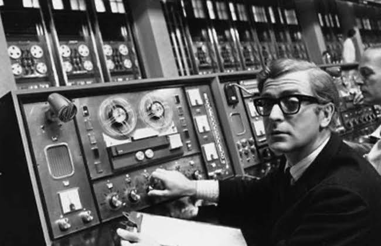
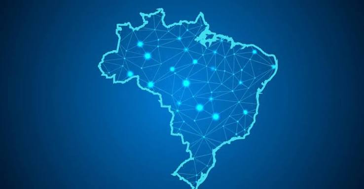

INICIO
HISTÓRIA
BROWSERS
FORMULÁRIO
A internet surgiu na década de 1960 nos EUA, criada pelo Departamento de Defesa como ARPANET, uma rede militar e acadêmica descentralizada para proteger dados durante a Guerra Fria. Evoluiu para a "rede mundial" com o protocolo TCP/IP (1982) e a criação da World Wide Web (WWW) por Tim Berners-Lee em 1991, comercializando-se nos anos 90.
A ARPANET funcionava através de um sistema conhecido como chaveamento de pacotes, que é um sistema de transmissão de dados em rede de computadores no qual as informações são divididas em pequenos pacotes, que por sua vez contém trecho dos dados, o endereço do destinatário e informações que permitiam a remontagem da mensagem original. O ataque inimigo nunca aconteceu, mas o que o Departamento de Defesa dos Estados Unidos não sabia era que dava início ao maior fenômeno midiático do século XX, único meio de comunicação que em apenas 4 anos conseguiria atingir cerca de 50 milhões de pessoas.
Já na década de 1970, a tensão entre URSS e EUA diminui. As duas potências entram definitivamente naquilo em que a história se encarregou de chamar de Coexistência Pacífica. Não havendo mais a iminência de um ataque imediato, o governo dos EUA permitiu que pesquisadores que desenvolvessem, nas suas respectivas universidades, estudos na área de defesa pudessem também entrar na ARPANET. Com isso, a ARPANET começou a ter dificuldades em administrar todo este sistema, devido ao grande e crescente número de localidades universitárias contidas nela.

No Brasil, os primeiros embriões de rede surgiram em 1988 e ligavam universidades do Brasil a instituições nos Estados Unidos. No mesmo ano, o Ibase começou a testar o Alternex, o primeiro serviço brasileiro de Internet não-acadêmica e não-governamental. Inicialmente o AlterNex era restrito aos membros do Ibase e associados e só em 1992 foi aberto ao público.
Em 1989, o Ministério da Ciência e Tecnologia lança um projeto pioneiro, a Rede Nacional de Ensino e Pesquisa (RNP). Existente ainda hoje, a RNP é uma organização de interesse público cuja principal missão é operar uma rede acadêmica de alcance nacional. Quando foi lançada, a organização tinha o objetivo de capacitar recursos humanos de alta tecnologia e difundir a tecnologia Internet através da implantação do primeiro backbone nacional.
O backbone funciona como uma espinha dorsal, é a infraestrutura que conecta todos os pontos de uma rede. O primeiro backbone brasileiro foi inaugurado em 1991, destinado exclusivamente à comunidade acadêmica. Mais tarde, em 1995, o governo resolveu abrir o backbone e fornecer conectividade a provedores de acesso comerciais. A partir dessa decisão, surgiu uma discussão sobre o papel da RNP como uma rede estritamente acadêmica com acesso livre para acadêmicos e taxada para todos dos outros consumidores. Com o crescimento da Internet comercial, a RNP voltou novamente a atenção para a comunidade científica.

A internet em 2026 não é mais apenas uma ferramenta de consulta ou entretenimento; ela se tornou o sistema nervoso central da sociedade global. Vivemos a era da hiperconectividade inteligente, onde a distinção entre o "online" e o "offline" praticamente desapareceu.
Busca Generativa: O modelo tradicional de "lista de links" do Google foi substituído por respostas diretas e sintetizadas que agregam múltiplos sites em uma única explicação fluida.
Agentes Digitais: A maioria dos usuários utiliza assistentes que não apenas respondem perguntas, mas executam tarefas (marcar reuniões, filtrar e-mails, gerenciar compras) de forma autônoma.
Conteúdo Sintético: Grande parte do que consumimos em vídeos e redes sociais é gerado ou otimizado por IA, permitindo uma personalização em tempo real para o perfil de cada usuário.
5G no Brasil: Cerca de 80% da população brasileira já tem acesso ao 5G, permitindo velocidades de até 1Gbps em áreas urbanas e latência quase nula. Isso viabilizou a telemedicina avançada e a automação industrial (Indústria 4.0).
Satélites de Baixa Órbita: Projetos como a Starlink e similares eliminaram quase todos os "buracos negros" de conexão, levando internet de alta qualidade para as áreas rurais mais remotas.
Horizonte do 6G: Enquanto o 5G amadurece, os primeiros testes e padrões do 6G já estão em pauta, prometendo integrar sensores e inteligência artificial diretamente na infraestrutura da rede.
Crise da Veracidade: A facilidade de criar deepfakes perfeitos gerou uma crise de confiança. A internet hoje exige camadas de verificação de autenticidade (como assinaturas digitais em vídeos) para combater a desinformação.
Cibersegurança como Serviço: Para o usuário comum, antivírus simples não bastam. Agora, as próprias operadoras de internet oferecem segurança nativa na rede, protegendo dispositivos de IoT (casas inteligentes) contra invasões.
Autenticação sem Senha: O uso de senhas de texto está em declínio acentuado, substituído por biometria e chaves digitais passkeys em quase todas as plataformas principais.
Descentralização: Há um movimento crescente de migração de grandes plataformas centralizadas para redes mais específicas e comunidades menores, buscando fugir de algoritmos de massa.
Economia da Atenção: O foco mudou para vídeos ultracurtos e interativos. O consumo de mídia é mais fragmentado, mas o tempo médio conectado continua subindo, impulsionado por dispositivos vestíveis (smartwatches e óculos de RA).